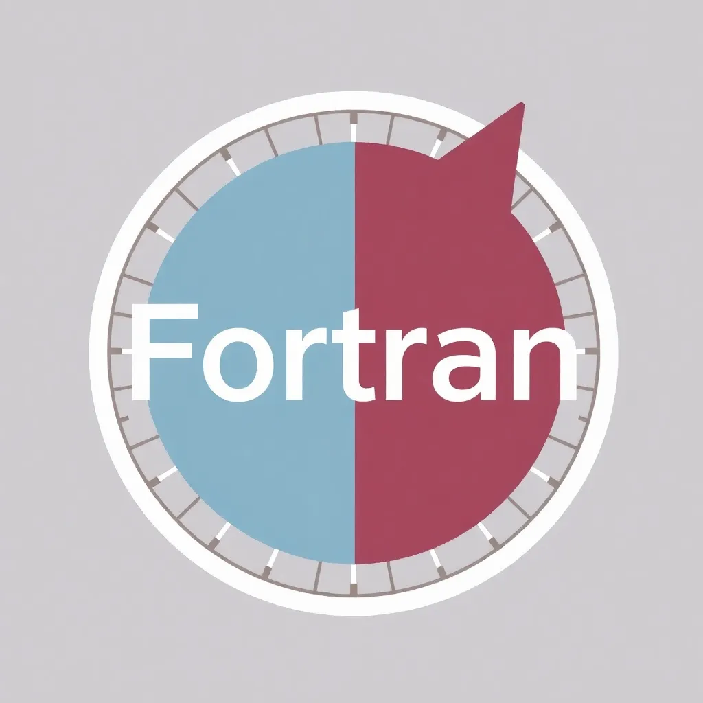
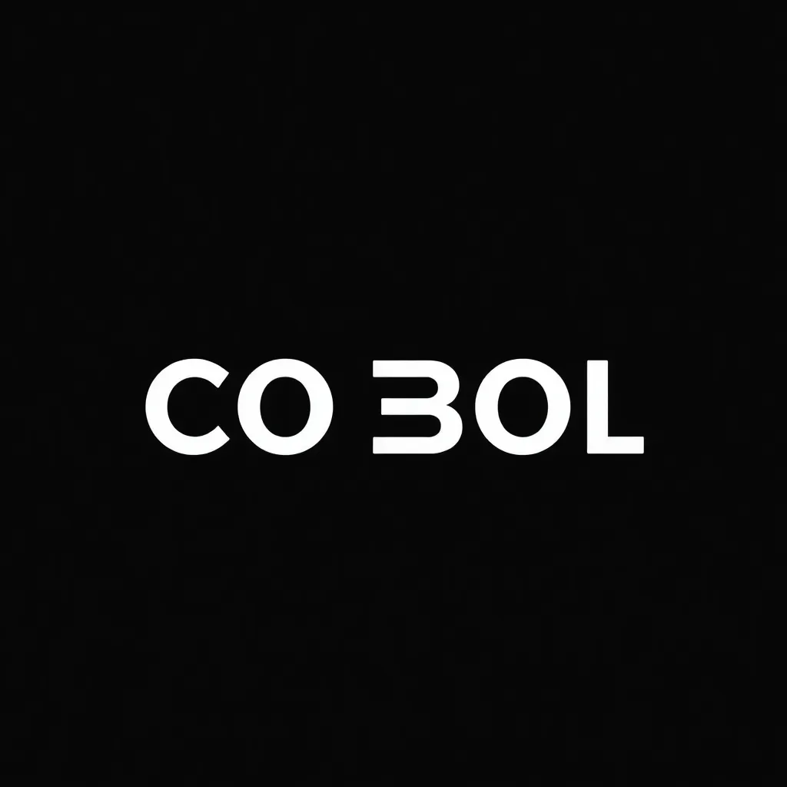
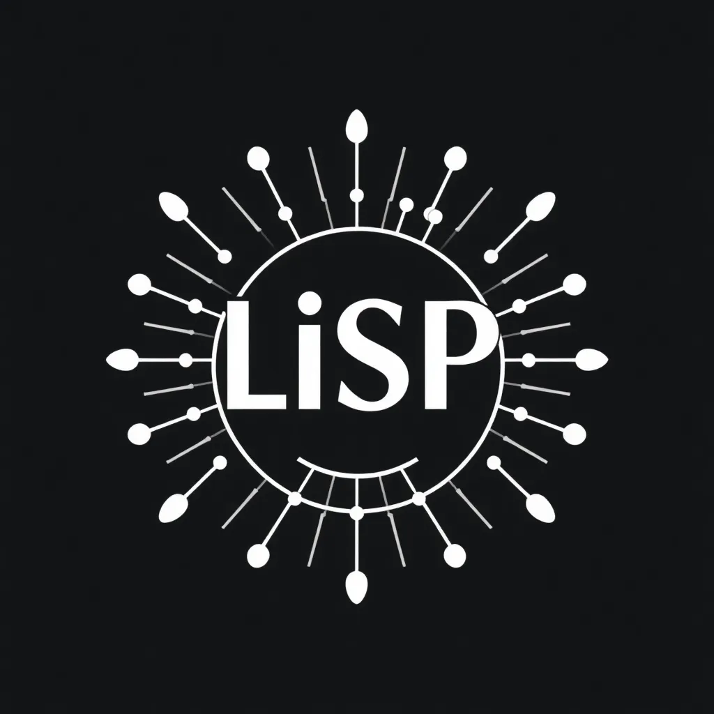

Fortran (1957): Lenguaje para cálculos científicos
COBOL (1959): Lenguaje para aplicaciones de negocios
LISP (1958): Lenguaje para inteligencia artificial
A lo largo de los años, los lenguajes de programación han evolucionado, adaptándose a nuevas necesidades y tecnologías. Lenguajes como C, Java y Python han ganado popularidad por su versatilidad y facilidad de uso.
Los lenguajes de programación son fundamentales en la era digital, permitiendo el desarrollo de software que impulsa la innovación tecnológica, desde aplicaciones móviles hasta inteligencia artificial.